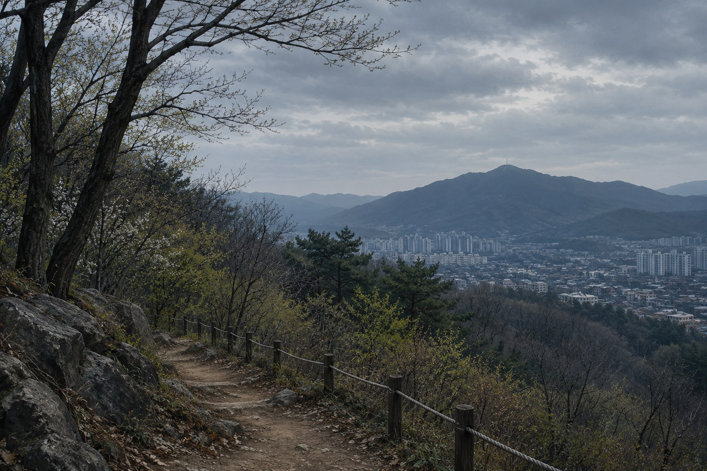

CASE FILE / 04
주요 쟁점과 미해결 의문
다양한 추측이 존재하지만, 범인과 정확한 범행 경위는 밝혀지지 않은 채 사건은 미제로 남아 있다.

남아 있는 주요 질문
실종 당일의 동선
아이들이 어디로 이동했는지, 마지막으로 확인된 시점과 목격 정보가 서로 어떻게 연결되는지는 사건을 이해하는 핵심이다.
사망 경위
유해와 현장 정황에 대한 해석을 둘러싸고 의견 차이가 보도되었다. 타살 여부나 구체적 원인을 단정하려면 신뢰할 수 있는 감정·수사 자료가 필요하다.
제보의 신뢰도
시간이 흐른 뒤의 기억은 변할 수 있다. 최초 진술 기록, 다른 증거와의 일치 여부, 제보자가 직접 관찰한 사실과 추론을 구분해야 한다.
수사의 한계
초기 수색과 기록 관리, 당시 기술적 여건 등이 결과에 어떤 영향을 미쳤는지 살펴볼 수 있다. 다만 수사상 한계가 있었다는 사실만으로 특정한 은폐나 고의가 입증되는 것은 아니다.
미해결 쟁점
사건을 둘러싼 여러 분석과 추측이 제기되었지만, 범인과 정확한 범행 경위는 밝혀지지 않았다. 각 쟁점은 확인된 사실과 검증되지 않은 가설을 구분해 살펴볼 필요가 있다.
| 주제 | 주요 내용 | 남아 있는 의문 |
|---|---|---|
| 유해 발견이 늦어진 이유 | 대대적인 수색이 진행되었음에도 아이들의 유해는 실종 후 약 11년 6개월이 지나 와룡산에서 발견되었다. | 초기 수색 범위와 방식이 발견 시점에 어떤 영향을 주었는지 명확하지 않다. |
| 실종 당일의 비명 | 당시 산에서 비명소리를 들었다는 목격자의 진술이 이후 방송과 보도를 통해 알려졌다. | 비명소리의 실제 발생 시각과 소리의 주체를 확정하기 어렵다. |
| 범행 수법 | 유해에서 확인된 손상과 의복 상태 등을 바탕으로 아이들이 공격을 받았을 가능성과 당시 상황이 분석되었다. | 실제 공격 과정과 피해자들이 처한 상황은 밝혀지지 않았다. |
| 범인의 수 | 한 명이 직접 범행을 저질렀다는 분석과 여러 명이 관여했을 가능성을 둘러싼 의문이 존재한다. | 범행에 직접 가담하거나 도움을 준 인원이 몇 명이었는지 확인되지 않았다. |
| 매장 방식 | 유해가 한 장소에서 발견되었으며, 발견 당시의 상태를 토대로 매장 시점과 방식이 분석되었다. | 유해를 옮기거나 매장한 과정과 사용된 도구는 명확히 밝혀지지 않았다. |
| 범행 도구 | 두개골의 손상 형태를 토대로 용접 망치 등 여러 도구의 가능성이 분석된 바 있다. | 실제 범행에 사용된 도구가 무엇인지는 확정되지 않았다. |
| 범인의 성향과 동기 | 범죄심리 분석에서는 계획성, 현장 지리에 대한 이해, 범행 동기 등에 관한 여러 해석이 제시되었다. | 범인이 누구인지, 왜 범행을 저질렀는지 확인할 수 있는 결정적 증거가 없다. |
| 조난 및 사고 가능성 | 실종 초기에는 산에서 길을 잃거나 사고를 당했을 가능성도 고려되었다. 이후 유해 감식 결과를 둘러싸고 타살 가능성이 주요 쟁점이 되었다. | 사고 가능성에 관한 주장과 감식 결과를 구분해 검토해야 한다. |
| 기타 범인 추측과 음모론 | 불량배, 군 사격장 관련 사고, 북한 간첩, 납북, 국가기관 개입 등 여러 주장이 제기되었다. | 이러한 주장은 모두 동일한 수준의 근거를 가진 것이 아니며, 일부는 뒷받침할 증거가 부족하거나 반론이 제기되었다. |